Tour
Cake IO's goal is to make working with the filesystem from within Unreal Engine simple and easy. In this tour, we'll take a look at the core features designed to accomplish that goal.
Warning
Cake IO currently only provides official support for the Windows platform. Expanding the supported platforms is a high priority. For more details, please see this section.
Dedicated Filesystem Types
Cake IO provides dedicated types to represent the common filesystem concepts: paths, file extensions, files, and directories. Together these types work to provide us with a cohesive, simple way to accomplish our filesystem goals.
Paths
Paths grant us the ability to easily store, compare, and manipulate filesystem paths.
With Cake IO's path objects, a standard path representation is automatically maintained, and we can focus entirely on using the path rather than how it is represented. We can build paths using Windows or Unix-like path strings:
Note
We also don't need to worry about whether to include a trailing path separator for directories because the path object will handle that for us.
Path objects give us access to proper path comparison, indicating whether the two paths refer to the same location on the filesystem:
Path objects contain a variety of utilities for path manipulation and generation like CloneWithNewParent, which lets us copy a path and give it a new parent path:
For more information on path objects, please see the official API documentation.
File Extensions
The cornerstone in many file-related tasks, file extensions are finally given the recognition they deserve via their own type.
Just like the path objects, one of the core jobs of the file extension object is to maintain a standard representation for the file extensions. Never worry again about whether you need to include a leading '.' in your file extensions, because it will be automatically handled! Creating the extension "txt" or ".txt" will always result in the same extension:
Cake IO makes a distinction between single file extensions like ".txt" and multi file extensions like ".txt.md". We can easily find out type a file extension is by having the object classify itself:
File extensions also provide us with a variety of utility functions, like easily extracting file extensions from file paths:
For more information on file extension objects, please see the official API documentation.
Files
The file object comes a comprehensive interface for common IO operations, with interfaces to support reading / writing both text and binary data.
FCakeFile ReadmeFile{
FCakePath{ TEXTVIEW("game/readme.md") }
};
if (!ReadmeFile.Exists())
{
FStringView ReadmeText{ TEXTVIEW("Welcome to the readme!") };
if (!ReadmeFile.CreateTextFile(ReadmeText))
{
UE_LOG(LogTemp, Error, TEXT("Failed creating readme file!"));
}
}
if (auto ReadText = ReadmeFile.ReadTextFile())
{
UE_LOG(LogTemp, Warning, TEXT("File text data: [%s]"), **ReadText)
}
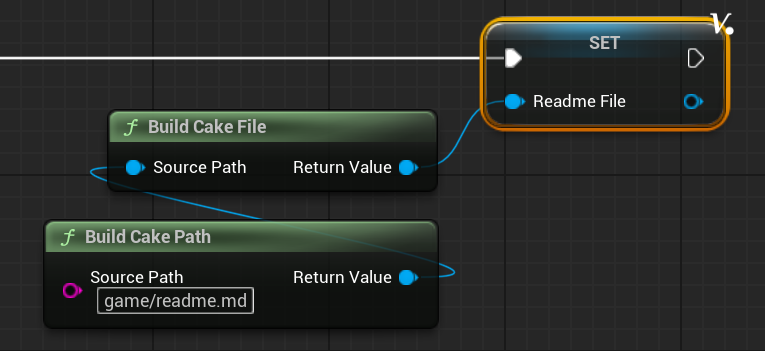
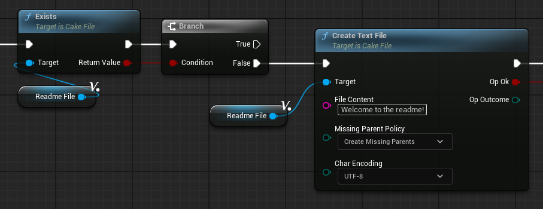
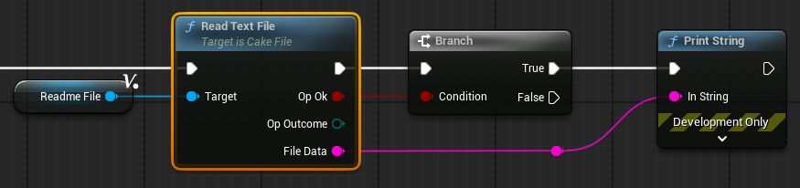
File objects also let us query various stat information about the file, such as its file size in bytes:
We can also get access to utility functions involving the file path itself, such as the getting file name or its extension:
For more information on file objects, please see the official API documentation.
Directories
Directory objects offers a comprehensive interface to work with directories.
Directory objects give us access to a set of common IO operations ranging from creating directories to changing the directory's name:
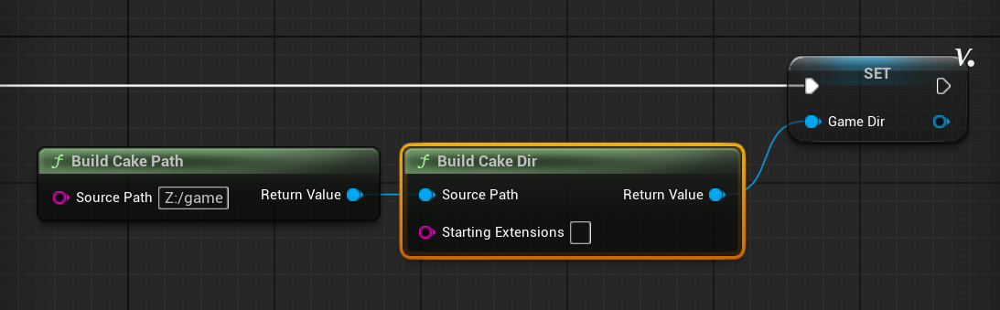
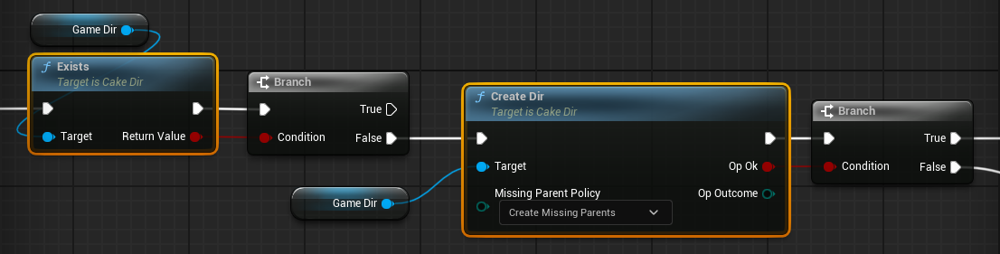
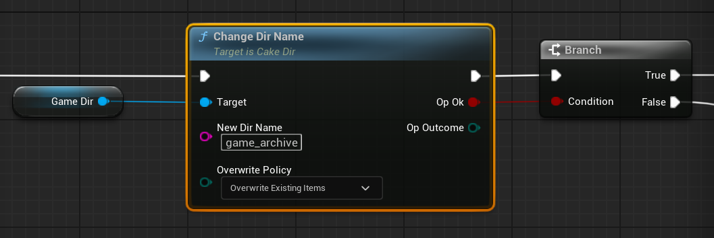
Directory objects also offer a powerful set of interfaces for directory traversal. All traversal interfaces take a user-supplied callback that will be invoked for each child that is visited. As an example, let's traverse all the files in a directory and print each file name:
As the example above shows, the traversal interfaces let us configure and control all aspects of traversal in a simple and straightforward interface. We decide which type of children to visit (files, subdirectories, or both) by choosing the appropriate function, and we can control whether the traversal should be recursive via a depth parameter.
There are three different styles of traversal supported in order to accomodate a wide variety of use-cases. Let's imagine we want to find the first file whose file name starts with a specific prefix. This would be perfect for the search style, which allows us to stop the traversal in a successful state as soon as we have accomplished our desired goal:
auto SearchResult = GameDir.TraverseSearchFiles(
ECakePolicyOpDepth::Deep,
[](FCakeFile NextFile) -> ECakeSignalSearch
{
const FString FileName{ NextFile.CloneFileName() };
if (FileName.StartsWith( TEXT("magic") ))
{
UE_LOG(LogTemp, Warning, TEXT("Found magic file: [%s]"), *FileName);
return ECakeSignalSearch::Success;
}
return ECakeSignalSearch::Continue;
}
);
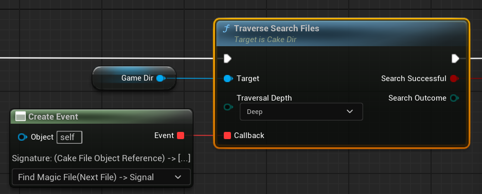
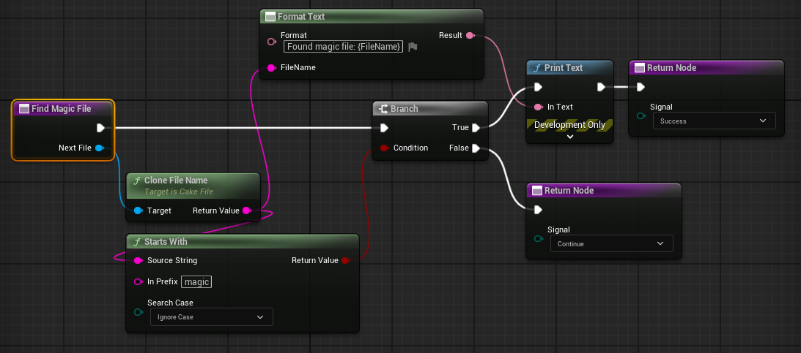
All directory objects have a set of file extensions known as the file extension filter. This filter can be applied to any file traversal style, letting us selectively visit files based upon their extensions. If we wanted to get the first three text or markdown files from a directory, we could easily achieve this with a filtered search traversal:
FCakeDir DocsDir{
FCakePath{ TEXTVIEW("Z:/game/docs/") },
TEXTVIEW("txt|md")
};
auto SearchResult = DocsDir.TraverseSearchFilesWithFilter(
ECakePolicyOpDepth::Deep,
[ FilesFound = int32{ 0 } ](FCakeFile NextFile) mutable -> ECakeSignalSearch
{
++FilesFound;
UE_LOG(LogTemp, Warning,
TEXT("Found text or markdown file: [%s]"),
*NextFile.CloneFileName()
);
if (FilesFound >= 3) { return ECakeSignalSearch::Success; }
return ECakeSignalSearch::Continue;
}
);
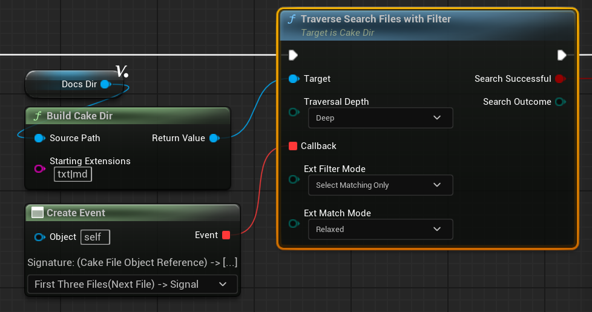
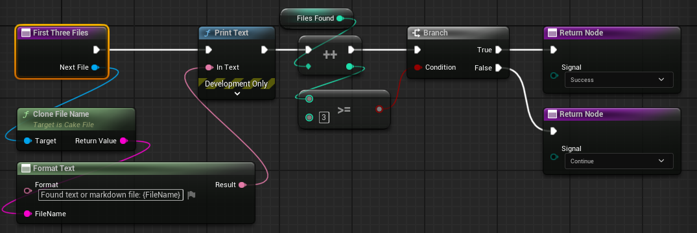
Directory objects also come with a variety of utility functions, such as BuildChildFile, which lets us easily create a file object parented under the directory's path:
For more information on directory objects, please see the official API documentation.
Enhanced Error Handling
Custom Error Types
Cake IO introduces custom error types to improve error reporting from filesystem operations, empowering callers with more context in the event an operation fails. Both file and directory IO operations have their own dedicated error type, and directory traversals also have error types to ensure the caller knows the exact outcome of every traversal.
Opt-In Error Handling
Error handling has been designed to be as flexible as possible, allowing users to opt-in to whatever level of complexity they require.
When minimal error handling is required, operations always provide a way where their outcome can be viewed as a Boolean indicating success or failure:
However, when more robust error handling is necessary, Cake IO's errors will give you the context required to properly respond to any untoward outcomes.
For more information on error handling, please see the official API documentation.
Cake Mix Library
Cake Mix is the official utility library for Cake IO. Cake Mix gives you access to both simple utilities like human-readable strings for error codes as well as advanced filesystem operations, like gathering all the files from a directory into an array.
Cake Mix will continue to expand and evolve throughout Cake IO's lifetime.
For more information on Cake Mix, please see the official API documentation.
Cake Async IO
Cake IO offers async support for many of the filesystem operations in both C++ and Blueprint. Cake Async IO lets you use many of Cake IO's interfaces in an asynchronous context.
auto OnAsyncWriteComplete = [](FCakeResultFileIO WriteResult) -> void
{
UE_LOG(LogTemp, Warning,
TEXT("Write result: [%s]"),
*WriteResult.ToString()
)
};
FCakeFile DataFile{
FCakePath{ TEXTVIEW("game/data/player.dat") }
};
TArray<uint8> PlayerLoc{ 0x14, 0x00, 0x4C, 0x4D, 0xFF };
auto Task = CakeAsyncIO::File::WriteBinaryFile(
DataFile,
PlayerLoc,
FCakeAsyncDoneFileIO::CreateLambda(OnAsyncWriteComplete)
);
if (!Task) { UE_LOG(LogTemp, Error, TEXT("Task failed to launch!")); }
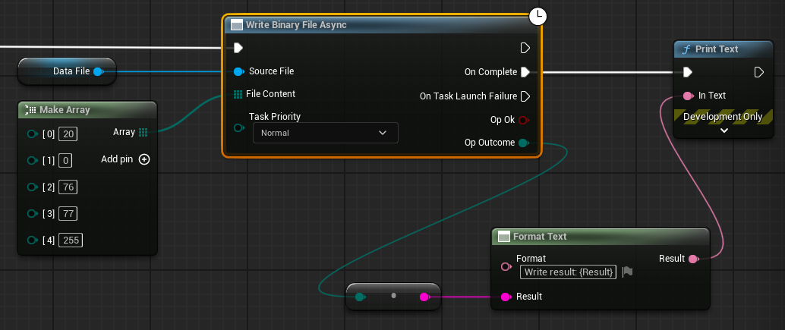
As with Cake Mix, the async libraries will continue to evolve throughout Cake IO's lifetime.
For more information on Cake Async IO, please see the official API documentation.